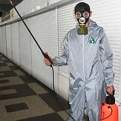
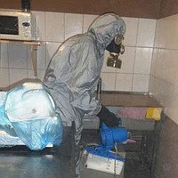

|  |

|
 |

|
|
Дератизація квартир
( знищення щурів, мишей ) ------------------------------------- від 300 грн./послуга |
Знищення щурів,
мишей на територіях ------------------------------------- 1,20 грн./ Кв.м |
Знищення щурів,
мишей в підвальних приміщеннях ----------------------------------------- від 300 грн. / послуга |
Знищення щурів, мишей на
об'єктах громадського харчування ----------------------------------------- від 1,20 грн. / м |